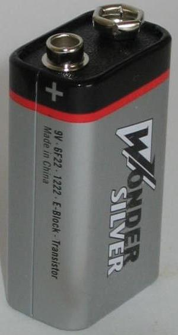
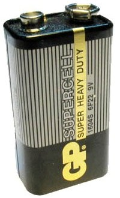
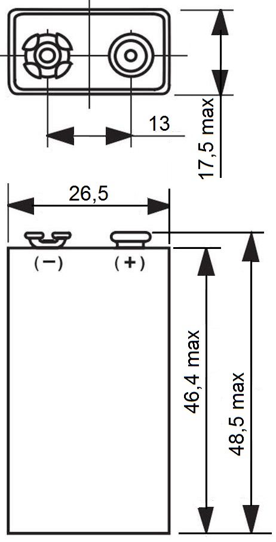

Батарея «Крона»
Батарейка «Крона» — типоразмер батареек. Название «Крона» происходит от марки выпускавшихся в СССР угольно-марганцевых батареек этого типоразмера.


Рис. 1 - Внешний вид батареек типа «Крона»

Рис. 2 - Размеры батарейки типа «Крона»
Технические характеристики батареи «Крона»:
- Размеры (мм) - 48,5 × 26,5 × 17,5.
- Масса - около 53 граммов.
- Напряжение — 9 В.
- Типичная ёмкость — 0,5 А·ч.
Существуют аккумуляторы данного форм-фактора:
- 1604, 6F22, 6R61 - солевая/цинковая.
- 1604A, 6LF22, 6LR61, MN1604, MX1604 - щелочная/алкалиновая.
- PP3, E-Block, 9V Brick Battery, AM6, Корунд, 522, 6AM6, CR-9V, ER9V - литиевая.
При рабочем расчётном напряжении в 8,4 В, свежезаряженными они могут короткое время давать 11,5 В и выше, что обусловлено особенностями составляющих их Ni-MH аккумуляторных элементов.
Аккумуляторные батареи 7Д-0,125 (7Д-0,1, 7Д-0,11) отечественного производства имели совместимые по форме контактов с «Кроной». Набирались из дисковых никель-кадмиевых аккумуляторов Д-0,125, Д-0,1, Д-0,11 соответственно, были цилиндрической формы, корпус — пластмассовый.
Технические характеристики батареи 7Д-0,125:
- Размеры (мм) - диаметр 24 мм, высота 62 мм.
- Масса - 53 г.
- Номинальная ёмкость - 100…125 мА•ч,
- Номинальное напряжение - 8,75 В.,
Обычные одноразовые батареи «Крона», в отличие от химических элементов питания других типов, допускали ограниченное количество дозарядок, хотя это и не рекомендовалось изготовителем.
В СССР выпускались щелочные батареи данного типоразмера, которые стоили дороже и назывались «Корунд». Батарея набиралась из прямоугольных галетных элементов. Применялся металлический корпус из лужёной жести, контактная площадка и дно из гетинакса или пластика.
Виды «Крон»
Одноразовые:
- Марганцево-цинковые солевые, 6 элементов
- Щелочные, 6 элементов
- Литий-железодисульфидные, 6 элементов
- Марганцево-литиевые, 3 элемента
- Воздушно-цинковые («Крона ВЦ»), 7 элементов, перед использованием требовалось разгерметизировать корпус — отломить тонкий пластмассовый «носик», который торчал между контактами.
- Литий-тионил-хлоридные (например, Li-SOCI2 1200 мА•ч)
Многоразовые (аккумуляторы):
- Ni-Cd 120 мА•ч
- Ni-MH 170—300 мА•ч
- Li-ION 350—700 мА•ч
В последнее время также имеются в продаже аккумуляторы специального типа. В корпусе «Кроны» встроен Li-Po аккумулятор (один элемент), повышающий импульсный преобразователь с малым током холостого хода, и малогабаритный разъём для заряда от внешнего источника напряжением 4,5-5,5 В. Это сохраняет достоинство упомянутого решения с Li-Ion, однако не требуется схема балансировки элементов, так как используется только один элемент. Напряжение на выходе стабилизировано. Для подзарядки не нужно искать специальное зарядное устройство для «Крон», достаточно любого источника 5 В, такого как USB. При этом, для чувствительной техники импульсное преобразование может быть неприемлемо.
Конструктивное исполнение
Один из контактов разъема батареи (минусовый) представляет собой гнездо, а второй — штекер. Таким образом, разъем одинаков для источника и потребителя, и при этом подключить батарею в неправильной полярности невозможно.